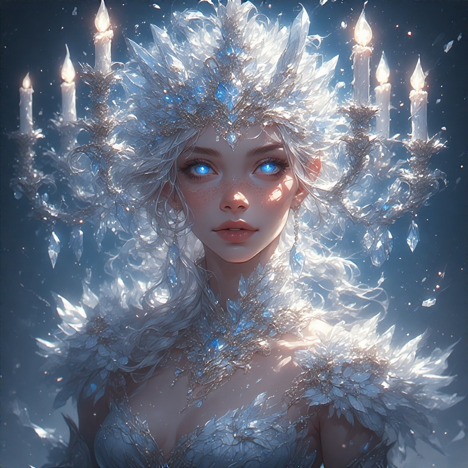

Holy-Reich
Secret défense
 Photographie de l'une des zones militarisés.
Photographie de l'une des zones militarisés.
 Laboratoire recensant les gènes de tout être.
Laboratoire recensant les gènes de tout être.
Zones de Recherches Militarisées (ZRM)
Mutantes (5)
La dénomination "Mutante" est donée par le Holy-Reich pour qualifier les membres d'une comunauté vivant isolée dans les ZRM (zone de recherche militarisée).
Cette communauté destinée à la recherche subit régulièrement des modifications génétiques afin d'atteindre les objectifs fixés par l'Empereur.
 Nixie
Nixie
 Minako
Minako
 Calypso
Calypso
 Asami
Asami
 Yayume
Yayume
Gardiennes (5)
Les gardiennes sont les seules personnes, en plus de l'empereur, à avoir connaissance des ZRM (zone de recherche militarisée).
Elles sont chargées de la protection de celles-ci ainsi que de mener les recherches.
 [non autorisé]
[non autorisé]
 [non autorisé]
[non autorisé]
 [non autorisé]
[non autorisé]
 [non autorisé]
[non autorisé]
 [non autorisé]
[non autorisé]
Scientifiques (3)
Pour maintenir les avancés des ZRM, une équipe de chercheurs y est dédiée.
Cette équipe se divise en trois principaux pôles : Chimie ; Physique ; Biologie

Elise
Pôle : Chimie
Elise est la directrice du pôle Chimie, major de promotion lors de ses deux premières années de thèse à Solvencia, elle fut mise à pied après un procès pour [XXX].
Alors que les charges contre elle étaient accablantes, elle fut innocentée et à peine quelques jours plus tard, elle se retrouva à travailler au sein des ZRM.
Accréditation : SR

Clara
Pôle : Physique
Clara est la directrice du pôle Physique, excellant dans l'une des plus importantes entreprises du pays, Clara monta les grades assez rapidement, mais celle-ci préfèra se lancer indépendamment dans ses propres recherches.
Cela ne fut pas au goût de son entreprise, qui se décida à engager [XXX]. La poursuite fut rapidement arretée quelques jours avant son arrivée dans les ZRM.
Accréditation : SR

Marin
Pôle : Biologie
Marin est la directrice du pôle Biologie, elle obtenue sa réputation au sein du milieu criminel, le monde du braconage lui était familier, cependant, comme souvent, elle s'attira les foudres de nombreux grands noms tels que (XXX).
Cela lui vallut de devoir se cacher, aussi bien des autorités que des criminels. Une rencontre fortuite lui fut se libérer de ses anciens nemesis et obtenir une place aux ZRM.
Accréditation : SR
Gouvernement
Lynx (5)
Lynx (Légion des Yeux Nocturnes Xénographes) est l'organisation chargée de l'espionage pour les comptes de l'empereur.
Les Lynx s'intègrent dans les territoires étrangers, au sein des plus hautes instances, depuis leurs plus jeunes ages. Tout cela dans le seul objectif de rapporter à l'empereur, ce qu'il veux savoir.

ℑ𝔰𝔰𝔬𝔦𝔯𝔢
Nom : Maria
Accréditation : SSR
Apparence physique :
Maria se dote d'une taille correcte de 1m74, elle possède une longue chevelure blonde généralement attachée.
Description :
Maria est la Linx la plus professionelle, elle priorise la mission avant tout autre chose, utilise chaque opportunité.
Ses missions ont des localisations diverses sur le continent, généralement dans le but de faire de l'ingérence au sein des administrations.
Maria est considérée comme la dirigeante des Lynx car ayant été la première dans la légion, malgré que cela ne soit qu'à titre indicatif, elle possède cependant un niveau d'accréditation élevé.

ℭ𝔞𝔫𝔞𝔡𝔢
Nom : Emily
Accréditation : SR
Apparence physique :
Emily possède une taille moyenne de 1m68, elle possède une longue chevelure brune et possède une garde robe assez extravagante.
Description :
Emily est adepte de stratégies peu conventionnelles, elle n'hésite pas à séduire ceux pouvant la mener à ses objectifs.
Ses missions parcourent toute la partie ouest du continent, permettant de corrompre les plus influents.
Membre classique des Linx, son accréditation est celle dès plus hauts fonctionnaires, même si se faire accepter n'importe ou n'est pas l'un de ses problèmes.

𝔓𝔞𝔯𝔡𝔢𝔩𝔩𝔢
Nom : Amanda
Accréditation : SR
Apparence physique :
Amanda se dote d'une grande taille de 1m78, elle possède une longue chevelure rose qu'elle laisse libre de prendre le vent. Elle est toujours habillée dès plus sobrement.
Description :
Assez curieuse, Amanda aime expérimenter des stratégies toujours plus originales, même si elle sait rester réaliste.
Une grande partie de ses missions ont été réalisées aux extremes du continent, dans des objectifs de recherche.
Membre classique des Linx, son accréditation est celle dès plus hauts fonctionnaires. Amanda est la seule ayant déjà utilisée ses compétences en dehors des missions.

ℜ𝔲𝔣𝔲𝔰
Nom : Mia
Accréditation : SR
Apparence physique :
Mia se dote d'une taille impressionante de 1m82, elle possède une chevelure rousse moyenne et est toujours en possession de multiples gadgets.
Description :
D'un comportement direct, C'est Mia la plus rapide, elle peut en seulement quelques jours obtenir davantage que nous ne pouvons même espérer.
Ses missions sont quasiment toutes réalisées au sud du continent, reversant fortunes et oeuvres d'arts à la solde de ses suppérieurs.
Membre classique des Linx, son accréditation est celle dès plus hauts fonctionnaires. Humble, elle avait initialement refusée l'évolution de son accréditation.

𝔅𝔬𝔯𝔢𝔞𝔩
Nom : Lindsey
Accréditation : SSSR
Apparence physique :
Lindsay se dote d'une petite taille de 1m53, elle possède une longue chevelure bleutée et arbore comunément des bijoux contenant de l'aigue-marine.
Description :
Avec un comportement plutot calme, Lindsay ne s'impose pas, elle reste discrète et sage en toute situation, même les plus complexes.
Le majeure partie de ses missions ont été réalisées au nord du continent, receuillant technologies et positions des administrations.
Son acréditation très importante laisse croire que Lindsay possède d'autres cartes en main, mais c'est avec talent que ce secret est gardé.
Laboratoire
Experiment
Les "Experiment" sont des expériences datant de l'ère de l'ancien empereur.
Elles ont toutes été réalisées par un unique scientifique, menant des recherches sur le génome, et dont l'identité est inconnue

𝒞𝒶𝓃𝒹𝓁𝑒
Nom : XX
Accréditation : XX
Apparence physique :
XX
Description :
XX
Pilgrim
[Hope]
Une jeune femme ayant un grand pouvoir. Elle ne fait que très peu d'apparitions publiques.
L'état du Holy-Reich a connaissance de celle-ci, cependant, aucun contact n'a été référencé.
 [non autorisé]
[non autorisé]
Adeptes
Des membres d'une organisation secrète indépendante de toute supervision.
Il est possible de les retrouver sur tout le continent, cependant, elles ont fréquément été repérées par les autorités du Holy-Reich.
 [non autorisé]
[non autorisé]
 [non autorisé]
[non autorisé]
 [non autorisé]
[non autorisé]
 [non autorisé]
[non autorisé]
 [non autorisé]
[non autorisé]